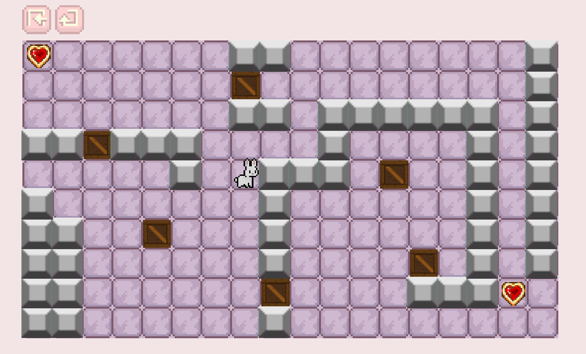
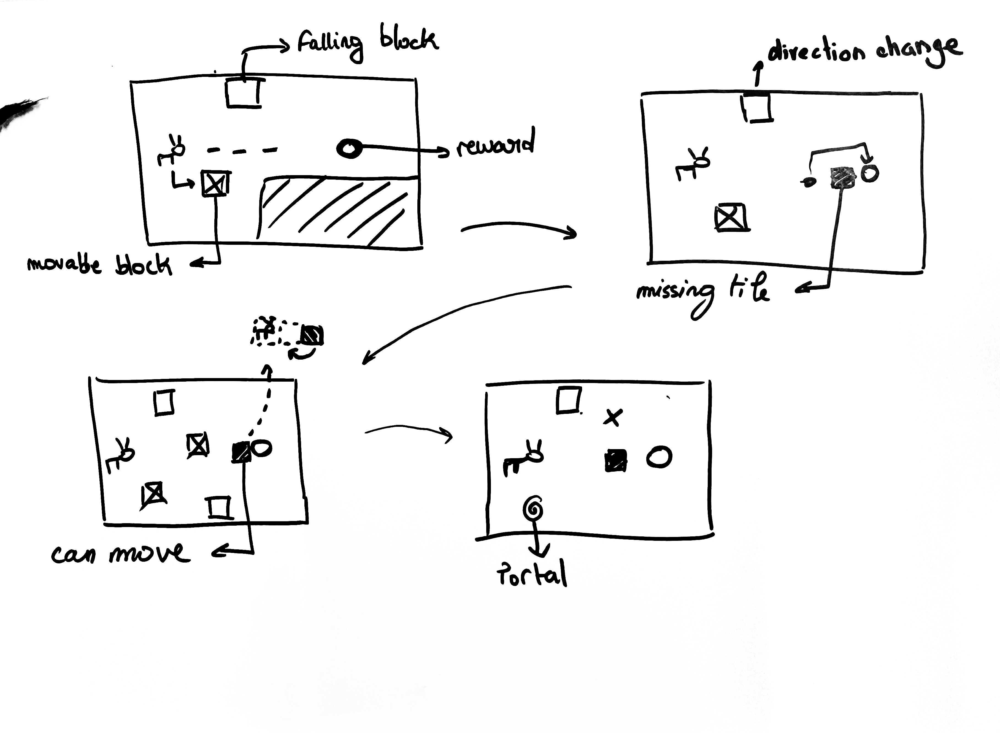
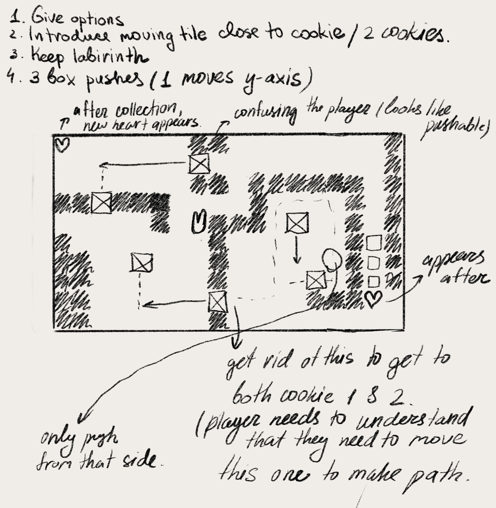
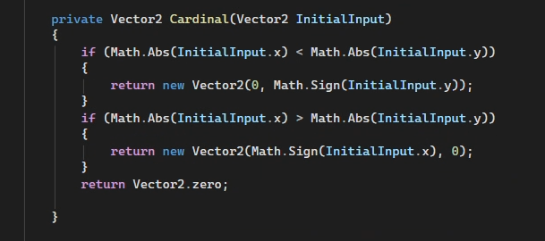
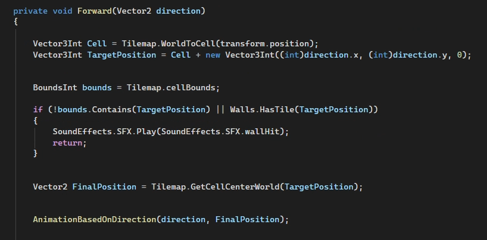
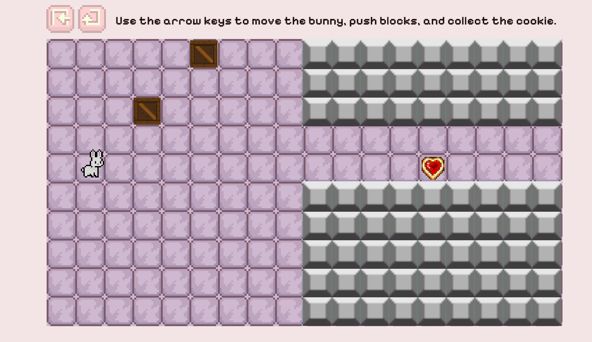
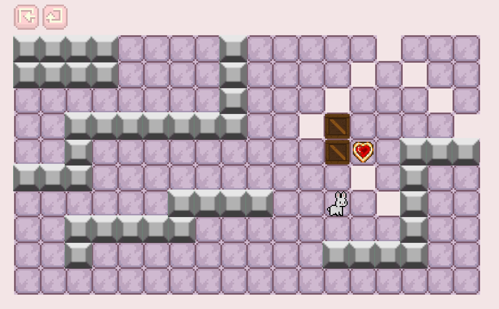
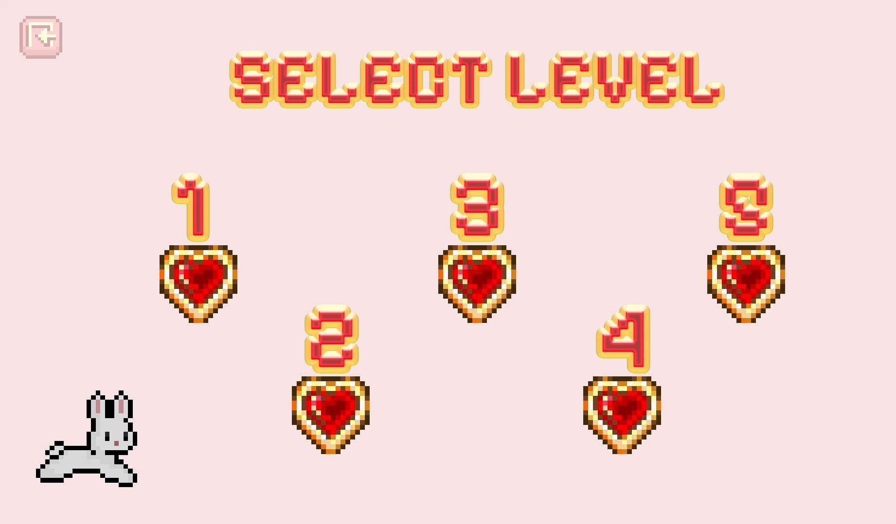
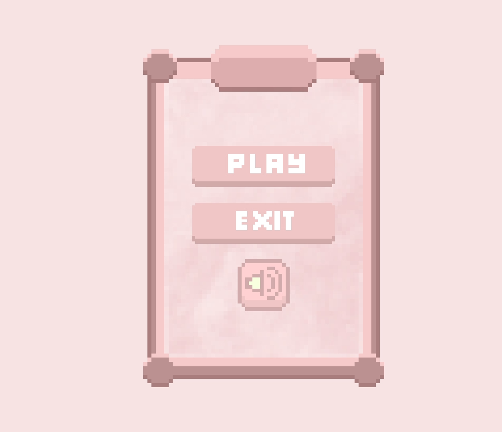

Bunny Dies
shared with 2 team members Lilia Bellahcen and Maya Kalenak
Overview
BunnyDies is a rage-bait puzzle game where the player must solve box-pushing puzzles to advance the bunny character to the next level. The game consists of 5 levels of increasing complexity in box mechanics, with each level introducing a new mechanic while expanding on the previous ones.
The player controls a bunny navigating through a tile-based environment filled with falling blocks, and other traps. The main goal of each level is to safely reach and collect the cookie while avoiding death.
The project was developed in Unity using C#, with a strong focus on puzzle progression, player frustration, and responsive game feel.

Goals
I was primarily involved in ideation, level design, UI and game feel, as well as implementation of the box sliding mechanics and code implementation of 2 levels.
My goals for this game were:
Create a simple but challenging puzzle experience focused on trial-and-error gameplay
Design levels that progressively teach mechanics while maintaining player engagement
Improve my understanding of game feel through animation, sound feedback, and responsive controls


The Typical Player Profile
Rage-Bait & Puzzle Game
BunnyDies combines puzzle-solving mechanics with rage-bait design principles. The game intentionally creates moments of surprise and frustration through unexpected obstacles, falling hazards, and misleading level setups. However, these moments are balanced with short levels, quick retries, and readable mechanics to encourage the player to continue trying.
The puzzle design relies on experimentation and observation. Players learn through failure while gradually understanding how different box types, traps, and environmental mechanics interact with one another.
The rage-bait aspect is especially visible in later levels, where mechanics intentionally subvert player expectations after they believe they understand the system.
Core Loop Mechanics
Key Methods:
The game uses a grid-based movement system implemented through Unity Tilemaps. The player movement converts world positions into grid cells using WorldToCell(), allowing movement to remain aligned to the tile grid.
The Cardinal() method restricts player movement to four directions by converting analog input into cardinal movement. This creates precise puzzle navigation and prevents diagonal movement that could break level logic.
GetCellCenterWorld() is used to reposition the player and movable blocks directly to the center of grid cells, ensuring accurate alignment and collision consistency.


The gameplay loop is centered around:
Several mechanics were implemented through coroutines and collision checks, including falling blocks, moving holes, death sequences, and environmental triggers. These systems helped create dynamic puzzle interactions while maintaining a simple visual style.
Level Design
BunnyDies starts with a tutorial level that provides guidance on movement, objectives, and the overall goal while introducing the core mechanics of box falling, pushing, wall obstacles, and cookie collection.
Our first level design gives the player a safe space to learn how mechanics work by presenting the two existing box types in a simple environment. This encourages the player to experiment and understand what happens when interacting with each object. Walls are introduced only to establish movement boundaries and communicate that certain paths are inaccessible.

All following levels increase the challenge by expanding on familiar mechanics while introducing additional complexity.
We used the “Teach, Test, Twist” technique to structure progression:
Level 1: Teaches the player that there are two types of boxes: falling boxes and pushable boxes. The player learns they can move a pushable box to block a falling one.
Level 2: Allows the player to test these mechanics in a more difficult setup with three boxes instead of two, requiring the player to determine the correct route out of multiple possibilities.
Levels 3-5: Introduce a twist to the falling box mechanic by changing movement directions. Boxes can now fall upward, left, and right as well.
In Level 3, we introduce another core mechanic: disappearing tiles triggered when the player approaches the goal. Since the game follows a rage-bait design philosophy, the trap appears right before the player reaches the cookie, catching them off guard. This unexpected failure creates a short moment of frustration while encouraging the player to retry and rethink the final obstacle.

UI & Game feel
Our UI is non-diegetic and helps create a smooth gameplay flow. The interface includes a main menu, navigation bar, level selection menu, transition screens, and a final screen. These systems allow the player to navigate the game, switch between levels, control sound settings, and receive feedback when completing objectives.
Additional elements contributing to game feel include sound effects, directional animations, screen fading, and transitions. These elements provide immediate feedback for player actions such as movement, pushing boxes, collecting cookies, or getting hit by hazards.
The bunny movement system was designed to feel responsive and readable. Directional animations communicate movement clearly, while sound effects reinforce interactions with the environment. Death animations and fade transitions help make failure feel polished rather than abrupt.
The combination of visual feedback, short retry loops, and responsive controls supports the rage-bait gameplay style while keeping the experience engaging rather than punishing.


Challenges and learning outcomes
This project was my first fully playable game that needed to incorporate many game design principles ranging from ideation to user testing and iteration.
Major challenges included:
One of the biggest technical challenges was implementing the falling block system. The blocks needed to react dynamically to player position, move correctly within the tile grid, stop on collision, and trigger death animations when hitting the player.
Another challenge was designing levels that naturally taught mechanics without relying too heavily on text instructions. Through playtesting, we adjusted puzzle layouts and mechanic timing to improve clarity and pacing.
Through this project, I strengthened my understanding of gameplay programming, level progression, player psychology, and game feel. I also gained experience working collaboratively in a small development team while building a complete playable game from concept to final implementation.